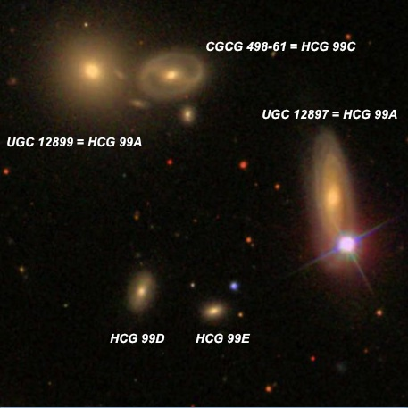
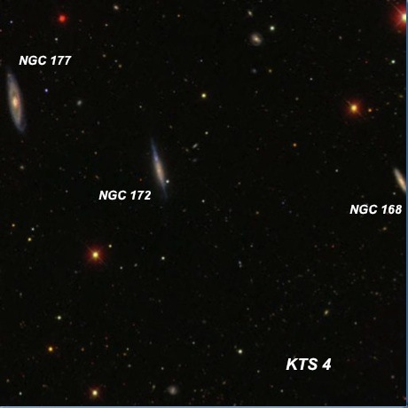
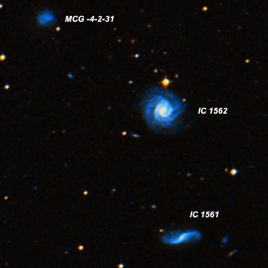
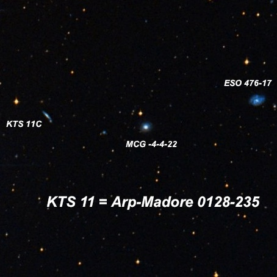
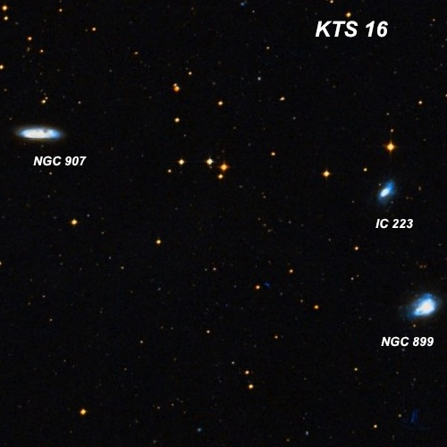
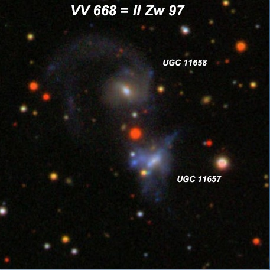
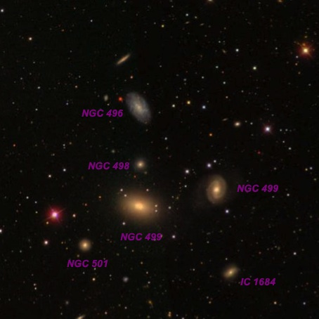

CalStar 2013 (Part 2)
On the first night (October 3, 2013) of the Calstar gathering at Lake San Antonio ( http://lakesanantonioresort.com/ ), I decided to work mainly on KTS triplets. This catalogue contains 76 isolated triplets, all south of -3 degrees declination, that was compiled in 2000 by Russian astronomers V.E. Karachentseva and I.D. Karachentsev. The objects were selected using ESO/SERC and POSS-I sky survey plates. Roughly half of these triplets (designated KTS 1, KTS 2, etc.) are accessible from sites in northern or central California, while the other half requires a trip further south (preferably the southern hemisphere!). The first object I looked at, though, is Hickson Compact Group (HCG) 99, which is located much further north in Pegasus. The images are either from the Sloan Digital Sky Survey (SDSS) or the DSS from WikiSky. All observing notes were made with my 24-inch f/3.7 Starstructure, generally at 375x unless noted otherwise.

HCG 99 00 00 44 +28 23.3 2' diameter
HCG 99B = UGC 12899 is the brightest of 5 members in HCG 99. At 375x it appeared moderately bright, fairly small, round, 30" diameter, increases evenly to a brighter quasi-stellar nucleus. HCG 99C = CGCG 499-33 is attached at the west end [40" between centers] and was easily seen as a faint to fairly faint glow, elongated 5:2 E-W, 30"x12", with a slightly brighter nucleus. HCG 99A = UGC 12897 has a mag 11.5 star attached at the south end which detracts from viewing, but this is the largest member of the quintet. It appeared fairly faint, fairly small, very elongated 3:1 N-S, ~40"x13". The two faintest members, HCG 99D and 99E, were both extremely faint and small, roundish. 99D was slightly larger at 10" with 99E just a very dim 6" glow.

KTS 4 00 37 09 -22 33 30 13' diameter
NGC 177 = KTS 4C is the most prominent of a very distinctive trio of edge-ons all extending SSW-NNE with NGC 172 = KTS 4B 5' SW and NGC 168 = KTS 4A 13' WSW. At 375x appeared moderately bright, fairly large, edge-on 5:1 nearly N-S, 1.5'x0.3', sharply concentrated with a small, bright elongated core increasing to a stellar nucleus. NGC 172 was fairly faint, moderately large, edge-on SSW-NNE, 0.9'x0.2', irregular surface brightness. NGC 168 appeared fairly faint, moderately large, edge-on 5:1 SSW-NNE, 40"x8", broad weak concentration. A mag 10.4 star lies 5.5' N.

KTS 5 00 38 39 -24 16 48 8' diameter
IC 1562 = KTS 5B, brightest in the triplet appeared moderately bright and large, slightly elongated, ~1.2' diameter, broad concentration but no distinct core or nucleus. A mag 13 star is 0.9' N of center, just off the north side. IC 1561 = KTS 5A is the second brightest at 4.0' S and appeared fairly faint, elongated 5:2 WNW-ESE, 45"x22", slightly brighter core. MCG -04-02-031 = KTS 5C at 4.6' NE of IC 1562 is the dimmest member.

KTS 11 = Arp-Madore 0128-235 01 31 14 -23 36 00 12.6' diameter
ESO 476-017 = KTS 11A appeared faint to fairly faint, small, 20"x15" (probably the core), low surface brightness. First in this triplet with MCG -04-04-022 = KTS 11B 6.8' ESE and KTS 11C 12.7' E. MCG -04-04-022 is perhaps the most prominent member and appeared fairly faint, fairly small, round, 24" diameter, weak concentration, very small slightly brighter nucleus. KTS 11C, a faint edge-on, appeared very faint, fairly small, elongated 3:1 SW-NE, 24"x8". The trio was observed at 375x.

KTS 16 02 22 19 -20 45 36 17' diameter
NGC 899 = KTS 16A is the brightest (or highest surface brightness) in a triplet with IC 223 = KTS 16B 5' NNE and NGC 907 = KTS 16C 17' NE. At 375x, NGC 899 appeared fairly bright, moderately large, irregular, ~0.9'x0.7'. A very faint extension was repeatedly visible on the SE end protruding towards the east. This asymmetry is confirmed on the DSS, which reveals a chaotic system with knots. A wide pair of mag 13 stars is less than 2' SW. IC 233 appeared fairly faint to moderately bright, fairly small, oval 3:2 NW-SE, broad concentration, 30"x20". Forms the vertex of a triangle with a mag 11.5 star 1.8' N and a mag 12.5 star 2.5' ENE. Finally, NGC 907 was moderately to fairly bright, fairly large, very elongated 3:1 E-W, 1.5'x0.5'. Irregular surface brightness and clearly brighter on the east side.

VV 668 = UGC 11657/11658 20 59 47 -01 53
This interacting pair consists of two faint galaxies separated by just 1'. UGC 11657 appeared faint, small, very elongated 5:2 NW-SE, 20"x8", even surface brightness. The companion UGC 11658 was faint, very small, round, 15" (core only). A mag 15.7 star lies directly between the galaxies.

NGC 499 /507 Group 01 23 19 +33 21 36
28 galaxies were observed in this group, which is part of the Pisces-Perseus Supercluster. The field in the image is dominated by NGC 499 which appeared fairly bright, moderately large, elongated 4:3 WSW-ENE, 60"x45", well concentrated with a very bright core. Nearby are NGC 498 1.8' N, NGC 501 2.8' SE, NGC 498 3.4' WNW and NGC 496 4.2' N. Perhaps the faintest NGC galaxy is 498, discovered with the 72-inch of Lord Rosse in 1856. It appeared as a very faint, slightly elongated glow, 15"x12", with a low surface brightness.